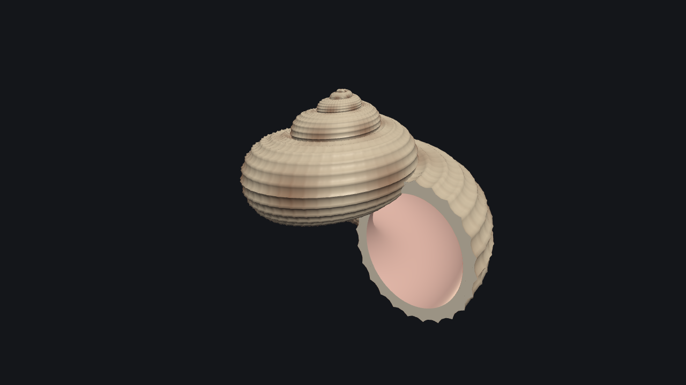

贝壳
生长与几何贝壳一边绕轴旋转一边按固定比例长大，于是每一圈都是上一圈的放大副本，外形是一条对数螺线。
分形
无穷的自相似把一条简单的规则反复执行，局部和整体长得一样，放大多少倍都看不到尽头。


图案
自然界的自组织没有设计图，只有一条局部的规则：每颗种子转同一个角度，或者两种物质一边反应一边扩散。整体的秩序是自己长出来的。
运动与波
随时间演化把时间也放进公式：确定的方程可以走出不可预测的轨道，一串匀速转动的圆可以画出任何一条闭合曲线。
几何与拓扑
形状、对称与空间有的铺砖永远不重复，有的曲面只有一面，四维的立方体也能转给你看。
数论
整数里的秩序素数、分数和最简单的整数规则，画出来以后会露出意想不到的纹路。
概率
随机中的规律单次结果无法预测，大量重复以后却精确地服从定律。
计算
简单规则，复杂行为每个格子只看邻居、只按一条规则更新，整体却能长出滑翔机、混沌和自组织临界。